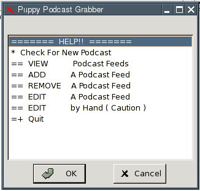

Puppy Podcast Grabber Manual
PPG is a very complex shell script that downloads files inbeded in RSS feeds. In most cases these are Podcasts.
It has some great fetures that make things a snap
Automatic deletion of old Podcasts ( Saves disk space )
Works with or without a included GUI
Once set up can run transparently, no user interaction needed
Keeps track of everything will not download anything 2 times
Very Small ! 1 K
Podcasts are something like radio shows, most have a scedule. For example a Podcast could be a Thursday only Podcast. This means that when you run PPG on Thursdays there will be an audio file in the proper directory that you can use your favorit media player to play.
How to Use It
To start run /usr/local/ppg/ppg-gui.sh to do this type /usr/local/ppg/ppg-gui.sh in an rxvt window or run it in ROX.
When started you should see this

First off you need to find some Podcasts you like. To do this goto www.podcastalley.com or www.digg.com ( top right ) and find somthing you like.
you will need
URL
An example of this is www.somthing.com/somthing/something.xml. This sould be easy to get you will have to click on subscribe or somethig to get it. just copy ( Control-C ) it.
Name
You
pick this so somthing that you can rember what the podcast is
about would be good. The name you choose will be used as the
author's name in the MP3 id3tag.
Amount of Time to Keep Files
Somthing like a week is good. I use 8 days so there is a podcast all the time for weekly Shows. This can be diffrent for all Feeds so some you like you could keep longer.
Now that you have the info you need goto ADD new Podcast Feed in the main menu.
Now fill in the info, paste ( Control-P ) the URL, type the name and type the number of days to keep the files.
Add a few feeds and then click "Check For new Podcasts" in the main menu
this should bring up a rxvt window and do the dirty work. Your new Podcasts will be in the /root/my-documnets/Podcasts dir sorted into folders.
The rest of the menu items should be easy enough..
ADD, EDIT, REMOVE, VIEW
Now that you have it set up all you need to to to download a fresh lot of Podcasts it to run the /usr/local/ppg/ppg.sh script.
If you have any questions email me
Coulthard -a-t- ieee.org